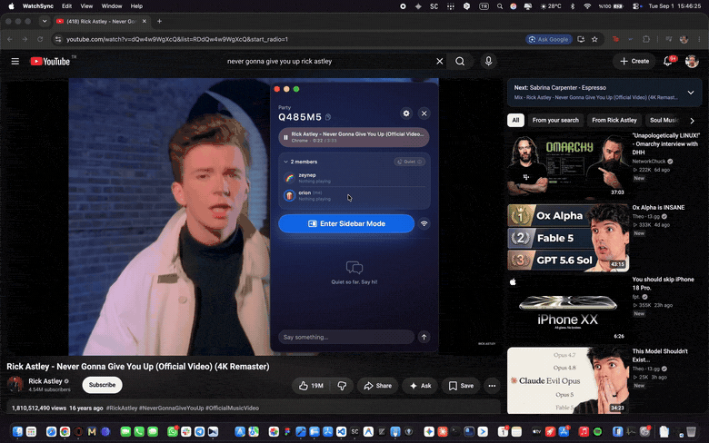
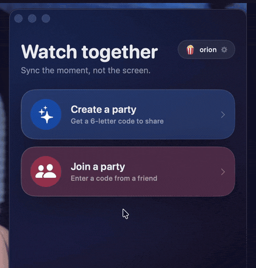
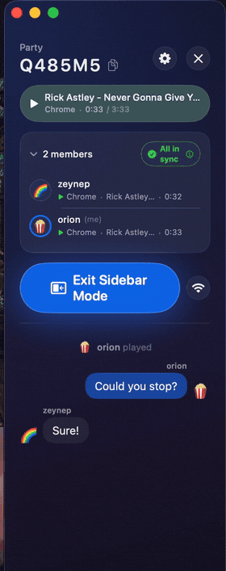

Sync the moment, not the screen.
Nobody streams anything to anybody. Everyone opens their own copy, and WatchSync keeps the play button in lockstep.

Sidebar mode: your video keeps the screen, the party gets the edge.
It re-encodes a 4K file into a smeary 720p, it dies the moment someone's Wi-Fi hiccups, and one person's laptop does all the work while their fan screams.
WatchSync goes the other way. Everyone plays their own copy at full quality, in whatever app they already use, and only the controls travel between you. You pause, everyone pauses. You skip back ten seconds because somebody was talking, everyone skips back ten seconds.
It knows what you're playing by asking macOS the same question the Now Playing widget asks — so YouTube in Chrome, a local file, Spotify and Apple Music all work the same way. No browser extension, nothing to set up per app.
Somebody creates a party and reads out a code. No email, no account, no invite link to chase down. The alphabet skips 0, 1, I and O, so nobody has to ask whether that's a zero or a letter O over a bad mic.
Pick a name and an emoji and you're in. Your seat is held by an ID generated on your own Mac — there's no profile of you anywhere.

Sync that silently doesn't work is worse than no sync. So the party header always says which of eight states you're actually in — everyone together, drifted by nine seconds, split on play state, or watching entirely different things. Hover it and it explains itself.
Underneath, the chat narrates what the room did: orion played, zeynep jumped to 0:32, orion paused. When something desyncs, you can see which pause caused it.

After macOS 15.4, the private framework behind Now Playing stopped answering in-process calls — which is why a lot of media widgets quietly broke. WatchSync reaches it the one way that still works, so detection isn't a per-app integration list that rots.
A pause arriving mid-buffer looks exactly like a real pause from a friend. So a mismatch has to persist before anything happens, and the app then sets the absolute state rather than toggling — which is how these things end up in a pause/play war.
Before applying anything it checks you're even on the same content. Safari and Chrome on the same video still sync. Your Spotify and their movie leave each other alone.
Sidebar mode parks the panel against the right edge and re-snaps every time you switch apps — and rides into fullscreen instead of being hidden by it. Close the window and it drops to the menu bar, still syncing.
Yes. WatchSync syncs the controls, not the pixels — it never sees or sends a frame of what you're watching. Everyone needs their own copy, or their own tab on the same streaming service. Think shared remote, not projector.
Play and pause work anywhere macOS reports Now Playing, because they go out as a system-wide media key — the same event as the play button on your keyboard.
Seeking is fussier. In browsers it works by setting currentTime on the page's video element, which covers nearly every video site, but the browser has to allow it: Chrome → View → Developer → Allow JavaScript from Apple Events, or Safari → Develop → Allow JavaScript from Apple Events. Without that, play/pause still syncs and seek quietly doesn't.
No. There's no sign-up, no email and no password anywhere in the app. You're identified by a random ID generated on your Mac the first time you launch it, and "Clear all data" in Settings throws it away.
They fall out of the member list after three minutes and everyone else keeps syncing. When they come back, their seat is re-created automatically — a network blip can't wedge them out of the room.
Barely, and not for long. A party holds a six-character code, a display name and emoji per person, one row of current playback state, and the chat. Members are dropped after three minutes without a heartbeat, and the whole party — chat included — is deleted after 30 minutes of inactivity, or a minute after the last person leaves.
Two things, both for sidebar mode: reading the frontmost window's frame so it can size itself next to your video, and posting system-wide media keys so a remote pause reaches whatever app is playing. Deny it and everything else still works — you just get a floating window instead of a snapped one.
It can't be. Accessibility, system-wide media keys, AppleEvents into other apps and a subprocess reaching a private framework are each independently disqualifying. So it ships the way Rectangle and Bartender do: a Developer ID app, signed and notarized by Apple, in a DMG. Gatekeeper opens it normally — no right-click-to-open dance.
Yes, and it's open source under the MIT license. No ads, no accounts, nothing to buy. If you'd rather not use the hosted backend, the whole thing runs on your own Convex instance — that's two commands.